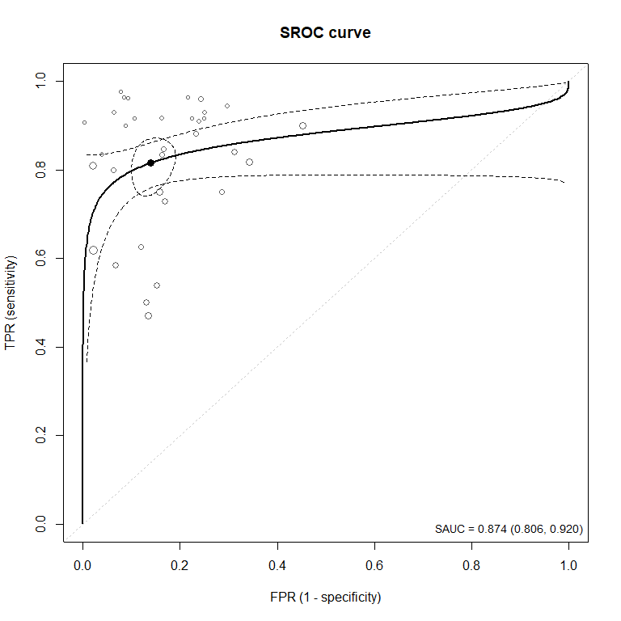
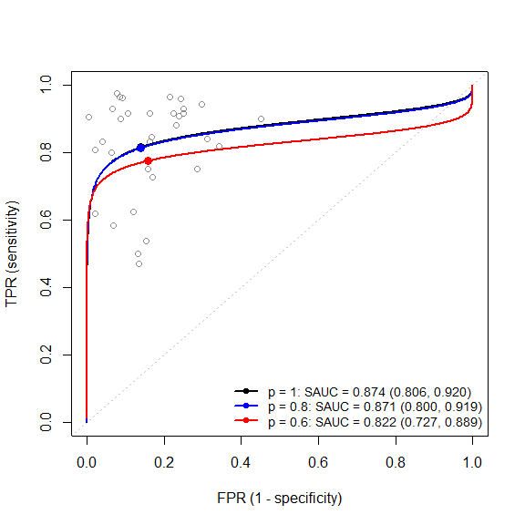
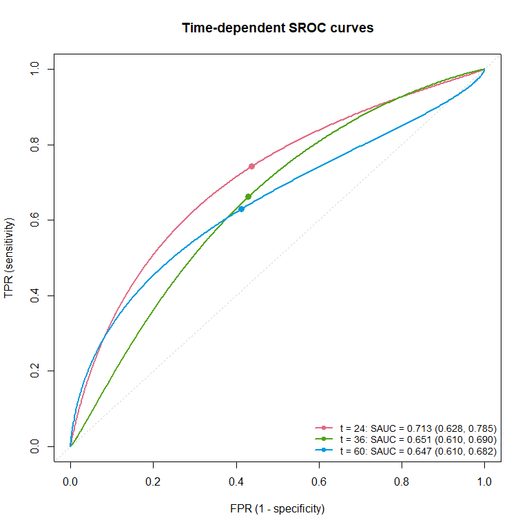
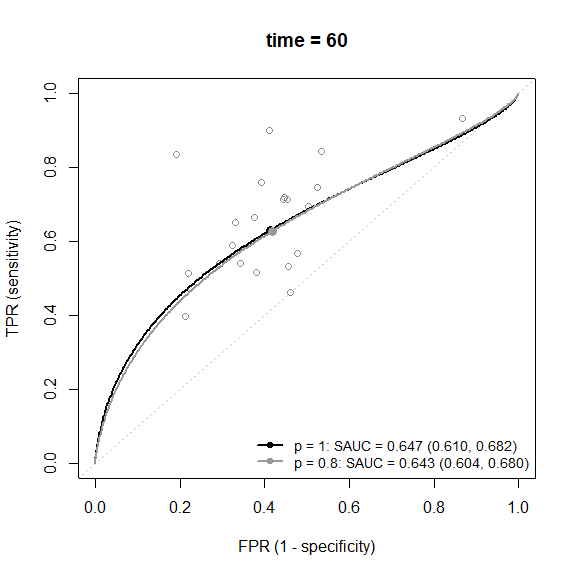
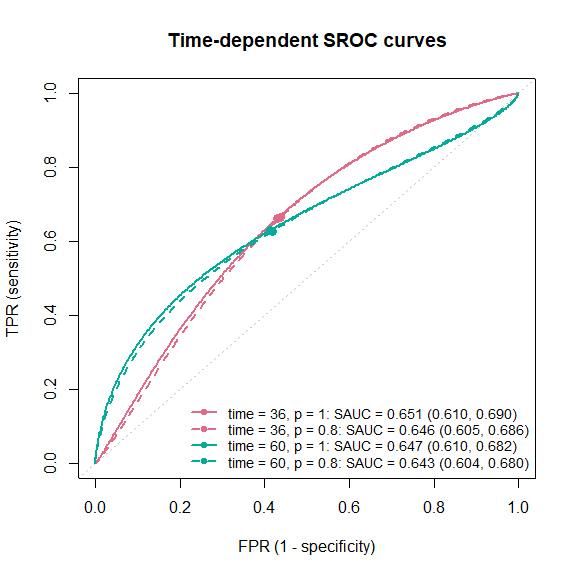

- DiagProgMeta
Meta-analysis of diagnostic and prognostic studies: SROC curves and sensitivity analysis for publication bias
DiagProgMeta is an R package for the meta-analysis of
- diagnostic test accuracy (DTA) studies: the summary receiver operating characteristic (SROC) curve and the area under the SROC curve (SAUC) by the bivariate random-effects model (Reitsma et al., 2005), and
- prognostic studies: the time-dependent SROC curve and SAUC, where the time-dependent sensitivity and specificity are reconstructed from the published survival probabilities (Hattori and Zhou, 2016),
each with a likelihood-based sensitivity analysis for publication bias (Zhou et al., 2023).
| Without publication bias | Sensitivity analysis for publication bias | |
|---|---|---|
| Diagnostic studies (SROC) | reitsma.sroc() |
srocsa.t() |
| Prognostic studies (time-dependent SROC) | hattori.tsroc() |
tsrocsa.lrt() |
All four fitting functions come with print(), summary(), and plot() methods.
The repository is named srocsa, but the package name is DiagProgMeta.
Installation
The development version can be installed from GitHub:
# install.packages("remotes")
remotes::install_github("kusuri26/srocsa")Alternatively,
# install.packages("pak")
pak::pak("kusuri26/srocsa")DiagProgMeta requires R (>= 3.5) and imports lifecycle, mixmeta, and numDeriv.
Example 1: diagnostic studies (SROC curve)
The IVD data (Safdar et al., 2005) contain the 2 x 2 tables (TP, FN, FP, TN) of 33 diagnostic studies.
data(IVD)
head(IVD)
#> study TP FN FP TN cutoff.grp type cutoff
#> 1 1 12 0 29 289 1 SQ 15
#> 2 2 10 2 14 72 2 SQ 1000
#> 3 3 17 1 36 85 1 SQ 15
#> 4 4 13 0 18 67 2 SQ 1000
#> 5 5 4 0 21 225 1 SQ 15
#> 6 6 15 2 122 403 1 SQ 15Without publication bias: reitsma.sroc()
fit.sroc <- reitsma.sroc(TP = TP, FN = FN, FP = FP, TN = TN, data = IVD)
print(fit.sroc)
#> SROC curve: bivariate random-effects model (Reitsma et al., 2005)
#> Publication bias is not considered
#>
#> K Conv SAUC 95% CI Sens 95% CI Spec 95% CI
#> 33 yes 0.874 [0.806, 0.920] 0.815 [0.757, 0.862] 0.861 [0.821, 0.893]
#>
#> Estimates (tau1, tau2: between-study SDs; rho: correlation):
#> mu1 mu2 tau1 tau2 rho
#> 1.484 1.824 0.597 0.826 -0.424summary() adds the standard errors and confidence intervals of all the parameters and the summary sensitivity, specificity, and SAUC.
summary(fit.sroc)
#> SROC curve: bivariate random-effects model (Reitsma et al., 2005)
#> Publication bias is not considered
#>
#> Call:
#> reitsma.sroc(TP = TP, FN = FN, FP = FP, TN = TN, data = IVD)
#>
#> ============================================================
#> Results
#> ============================================================
#> Number of studies: 33
#> Convergence: yes (relative convergence (4))
#> Log-likelihood: -31.076
#>
#> Parameters (tau1, tau2: between-study SDs; rho: correlation)
#> ------------------------------------------------------------
#> Estimate SE 95% CI
#> mu1 1.484 0.177 [1.136, 1.832]
#> mu2 1.824 0.154 [1.522, 2.125]
#> tau1 0.597 0.175 [0.336, 1.062]
#> tau2 0.826 0.117 [0.626, 1.090]
#> rho -0.424 0.236 [-0.769, 0.111]
#>
#> Summary measures
#> ------------------------------------------------------------
#> Estimate 95% CI
#> Sensitivity 0.815 [0.757, 0.862]
#> Specificity 0.861 [0.821, 0.893]
#> SAUC 0.874 [0.806, 0.920]
#>
#> All estimates (par.all)
#> ------------------------------------------------------------
#> mu1 mu2 tau1^2 tau2^2 tau12 sauc sens spec
#> 1.484 1.824 0.357 0.683 -0.209 0.874 0.815 0.861The SROC curve with its pointwise confidence band, the summary point with its confidence region, and the studies (point size proportional to the precision):
plot(fit.sroc, plot.ci = TRUE, spoint.region = TRUE,
add.study = TRUE, study.size = "precision")
Sensitivity analysis for publication bias: srocsa.t()
The model is fitted for each marginal selection probability in sa.p. corresponds to no publication bias; a smaller assumes that a smaller proportion of the studies is published.
fit.sa <- srocsa.t(TP = TP, FN = FN, TN = TN, FP = FP, data = IVD, sa.p = c(1, 0.8, 0.6))
print(fit.sa)
#> ==================================================
#> Model optimization
#>
#> Number of studies : 33
#> Optimizer : 1 1 1
#>
#> * 1 indicates converged
#> ==================================================
#>
#> SAUC Estimates
#> -------------------------------------------
#> Marginal p SAUC SE CI.low CI.up
#> -------------------------------------------
#> p = 1 0.874 0.029 0.806 0.920
#> p = 0.8 0.871 0.030 0.800 0.919
#> p = 0.6 0.822 0.041 0.727 0.889
#>
#> ==================================================
#>
#> Parameter Estimates (SE)
#> -------------------------------------------------------------------------------------------------------------------------
#> Marginal p mu_se mu_sp tau_se tau_sp rho beta alpha
#> -------------------------------------------------------------------------------------------------------------------------
#> p = 1 1.484 (0.177) 1.824 (0.154) 0.597 (0.175) 0.826 (0.117) -0.424 (0.236) - -
#> p = 0.8 1.472 (0.177) 1.818 (0.154) 0.607 (0.179) 0.828 (0.118) -0.404 (0.241) 5.000 (5.396) -7.943 (-)
#> p = 0.6 1.234 (0.150) 1.681 (0.153) 0.618 (0.202) 0.850 (0.127) -0.275 (0.270) 5.000 (4.126) -10.451 (-)
## tables of the SAUC and the parameter estimates
res <- summary(fit.sa)
#> Input:
#> srocsa.t(TP = TP, FN = FN, TN = TN, FP = FP, data = IVD, sa.p = c(1,
#> 0.8, 0.6))
#>
#> ==================================================
#> Model optimization
#>
#> Number of studies : 33
#> Optimizer : 1 1 1
#>
#> * 1 indicates converged
#> ==================================================
#>
#> SAUC Estimates
#> -------------------------------------------
#> Marginal p SAUC SE CI.low CI.up
#> -------------------------------------------
#> p = 1 0.874 0.029 0.806 0.920
#> p = 0.8 0.871 0.030 0.800 0.919
#> p = 0.6 0.822 0.041 0.727 0.889
#>
#> ==================================================
#>
#> Parameter Estimates (SE)
#> -------------------------------------------------------------------------------------------------------------------------
#> Marginal p mu_se mu_sp tau_se tau_sp rho beta alpha
#> -------------------------------------------------------------------------------------------------------------------------
#> p = 1 1.484 (0.177) 1.824 (0.154) 0.597 (0.175) 0.826 (0.117) -0.424 (0.236) - -
#> p = 0.8 1.472 (0.177) 1.818 (0.154) 0.607 (0.179) 0.828 (0.118) -0.404 (0.241) 5.000 (5.396) -7.943 (-)
#> p = 0.6 1.234 (0.150) 1.681 (0.153) 0.618 (0.202) 0.850 (0.127) -0.275 (0.270) 5.000 (4.126) -10.451 (-)
#>
#> ==================================================
#> All elements of the fitted models
#> ==================================================
#>
#> --------------------------------------------------
#> p = 1
#> --------------------------------------------------
#> mu1 mu2 tau1^2 tau2^2 tau12 c1^2 c2^2
#> 1.484 1.824 0.357 0.683 -0.209 0.100 0.900
#> beta alpha sauc sens spec
#> NA NA 0.874 0.815 0.861
#>
#> --------------------------------------------------
#> p = 0.8
#> --------------------------------------------------
#> mu1 mu2 tau1^2 tau2^2 tau12 c1^2 c2^2
#> 1.472 1.818 0.368 0.686 -0.203 0.673 0.327
#> beta alpha sauc sens spec
#> 5.000 -7.943 0.871 0.813 0.860
#>
#> --------------------------------------------------
#> p = 0.6
#> --------------------------------------------------
#> mu1 mu2 tau1^2 tau2^2 tau12 c1^2
#> 1.234 1.681 0.382 0.723 -0.145 0.623
#> c2^2 beta alpha sauc sens spec
#> 0.377 5.000 -10.451 0.822 0.775 0.843
res$sauc
#> p conv sauc sauc.se sauc.lb sauc.ub
#> 1 1.0 1 0.8735863 0.02875132 0.8057723 0.9200719
#> 2 0.8 1 0.8707545 0.02996087 0.7999308 0.9190442
#> 3 0.6 1 0.8218932 0.04115706 0.7267450 0.8889721
res$coef
#> p mu1 mu1.se mu2 mu2.se tau1 tau1.se tau2
#> 1 1.0 1.483992 0.1774775 1.823652 0.1538733 0.5974405 0.1753900 0.8261892
#> 2 0.8 1.472137 0.1766591 1.817753 0.1539493 0.6069136 0.1793773 0.8284942
#> 3 0.6 1.234145 0.1502265 1.680930 0.1529153 0.6182781 0.2015533 0.8500685
#> tau2.se rho rho.se beta beta.se alpha alpha.se
#> 1 0.1167857 -0.4244259 0.2363536 NA NA NA NA
#> 2 0.1177810 -0.4038358 0.2410633 5 5.395541 -7.942993 NA
#> 3 0.1274834 -0.2750564 0.2703518 5 4.125752 -10.451160 NA
## SROC curves and summary points for each p, with the studies
plot(fit.sa, sroc.cols = c("black", "blue", "red"), add.study = TRUE)
The change of the SROC curve and SAUC as decreases shows the potential impact of publication bias.
Example 2: prognostic studies (time-dependent SROC curve)
The Ki67 data are a list of three data frames:
| Element | Content | Columns used below |
|---|---|---|
Ki67$OS |
Survival probabilities of the test-positive (1) and test-negative (0) groups, one row for each study and each time point |
study, t, n1, n0, s1, s0
|
Ki67$HR |
Hazard ratio (group 1 vs 0) and its 95% CI, one row for each study |
study, HR, ci.low, ci.up
|
Ki67$MT |
Survival probabilities at the median follow-up time, used to estimate the censoring distribution |
mct_mo, n1, n0, s1_mct, s0_mct
|
data(Ki67)
Ki67_OS <- Ki67$OS
Ki67_HR <- Ki67$HR
Ki67_MT <- Ki67$MT
## lnHR and its variance from the HR and its 95% CI
Ki67_HR$lnHR <- log(Ki67_HR$HR)
Ki67_HR$lnHR.var <- ((log(Ki67_HR$ci.up) - log(Ki67_HR$ci.low)) / (2 * qnorm(0.975)))^2Without publication bias: hattori.tsroc()
The bivariate random-effects model is fitted at each time point in time.points.
fit.tsroc <- hattori.tsroc(
time.points = c(24, 36, 60),
study.os = study, time.os = t, n1.os = n1, n0.os = n0, s1.os = s1, s0.os = s0,
data.os = Ki67_OS,
study.lnhr = study, lnhr = lnHR, var.lnHR = lnHR.var,
data.lnhr = Ki67_HR,
time.med = mct_mo, n1.med = n1, n0.med = n0, s1.med = s1_mct, s0.med = s0_mct,
data.mt = Ki67_MT
)
## one row for each time point
print(fit.tsroc)
#> Time-dependent SROC curve: bivariate random-effects model at each time point
#> (Hattori and Zhou, 2016); publication bias is not considered
#>
#> K Conv SAUC 95% CI Sens 95% CI Spec 95% CI
#> t = 24 23 yes 0.713 [0.628, 0.785] 0.743 [0.647, 0.821] 0.562 [0.506, 0.617]
#> t = 36 23 yes 0.651 [0.610, 0.690] 0.662 [0.577, 0.738] 0.570 [0.515, 0.624]
#> t = 60 21 yes 0.647 [0.610, 0.682] 0.630 [0.567, 0.688] 0.587 [0.522, 0.649]
#>
#> Estimates (tau1, tau2: between-study SDs; rho: correlation):
#> mu1 mu2 tau1 tau2 rho
#> t = 24 1.063 0.249 0.911 0.520 -0.515
#> t = 36 0.673 0.284 0.656 0.512 -0.877
#> t = 60 0.532 0.353 0.430 0.577 -0.928
## estimates with SEs and confidence intervals at each time point
summary(fit.tsroc)
#> Time-dependent SROC curve: bivariate random-effects model at each time point
#> (Hattori and Zhou, 2016); publication bias is not considered
#>
#> Call:
#> hattori.tsroc(time.points = c(24, 36, 60), study.os = study,
#> time.os = t, n1.os = n1, n0.os = n0, s1.os = s1, s0.os = s0,
#> data.os = Ki67_OS, study.lnhr = study, lnhr = lnHR, var.lnHR = lnHR.var,
#> data.lnhr = Ki67_HR, time.med = mct_mo, n1.med = n1, n0.med = n0,
#> s1.med = s1_mct, s0.med = s0_mct, data.mt = Ki67_MT)
#>
#> ============================================================
#> t = 24
#> ============================================================
#> Number of studies: 23
#> Convergence: yes (relative convergence (4))
#> Log-likelihood: -10.651
#>
#> Parameters (tau1, tau2: between-study SDs; rho: correlation)
#> ------------------------------------------------------------
#> Estimate SE 95% CI
#> mu1 1.063 0.234 [0.604, 1.522]
#> mu2 0.249 0.116 [0.023, 0.476]
#> tau1 0.911 0.198 [0.595, 1.395]
#> tau2 0.520 0.096 [0.362, 0.746]
#> rho -0.515 0.259 [-0.852, 0.122]
#>
#> Summary measures
#> ------------------------------------------------------------
#> Estimate 95% CI
#> Sensitivity 0.743 [0.647, 0.821]
#> Specificity 0.562 [0.506, 0.617]
#> SAUC 0.713 [0.628, 0.785]
#>
#> All estimates (par.all)
#> ------------------------------------------------------------
#> mu1 mu2 tau1^2 tau2^2 tau12 sauc sens spec
#> 1.063 0.249 0.830 0.270 -0.244 0.713 0.743 0.562
#>
#> ============================================================
#> t = 36
#> ============================================================
#> Number of studies: 23
#> Convergence: yes (relative convergence (4))
#> Log-likelihood: -4.470
#>
#> Parameters (tau1, tau2: between-study SDs; rho: correlation)
#> ------------------------------------------------------------
#> Estimate SE 95% CI
#> mu1 0.673 0.185 [0.310, 1.036]
#> mu2 0.284 0.115 [0.059, 0.509]
#> tau1 0.656 0.209 [0.351, 1.224]
#> tau2 0.512 0.095 [0.356, 0.737]
#> rho -0.877 0.161 [-0.992, 0.005]
#>
#> Summary measures
#> ------------------------------------------------------------
#> Estimate 95% CI
#> Sensitivity 0.662 [0.577, 0.738]
#> Specificity 0.570 [0.515, 0.624]
#> SAUC 0.651 [0.610, 0.690]
#>
#> All estimates (par.all)
#> ------------------------------------------------------------
#> mu1 mu2 tau1^2 tau2^2 tau12 sauc sens spec
#> 0.673 0.284 0.430 0.262 -0.295 0.651 0.662 0.570
#>
#> ============================================================
#> t = 60
#> ============================================================
#> Number of studies: 21
#> Convergence: yes (relative convergence (4))
#> Log-likelihood: 3.044
#>
#> Parameters (tau1, tau2: between-study SDs; rho: correlation)
#> ------------------------------------------------------------
#> Estimate SE 95% CI
#> mu1 0.532 0.133 [0.271, 0.792]
#> mu2 0.353 0.135 [0.089, 0.617]
#> tau1 0.430 0.153 [0.215, 0.862]
#> tau2 0.577 0.110 [0.397, 0.837]
#> rho -0.928 0.124 [-0.998, 0.109]
#>
#> Summary measures
#> ------------------------------------------------------------
#> Estimate 95% CI
#> Sensitivity 0.630 [0.567, 0.688]
#> Specificity 0.587 [0.522, 0.649]
#> SAUC 0.647 [0.610, 0.682]
#>
#> All estimates (par.all)
#> ------------------------------------------------------------
#> mu1 mu2 tau1^2 tau2^2 tau12 sauc sens spec
#> 0.532 0.353 0.185 0.333 -0.230 0.647 0.630 0.587By default, plot() draws one plot for each time point; in an interactive session, press Return to move to the next time point. A single time point can be selected by time, and all the time points can be overlaid in one panel by overlay = TRUE.
plot(fit.tsroc) # one plot per time point
plot(fit.tsroc, time = 36, add.study = TRUE) # one time point with the studies
plot(fit.tsroc, overlay = TRUE) # all the time points in one panel
Sensitivity analysis for publication bias: tsrocsa.lrt()
The selection function is on the -statistic of lnHR. The model is fitted for each time point in time.points and each in senp.p.
fit.tsa <- tsrocsa.lrt(
time.points = c(36, 60),
study.os = study, time.os = t, n1.os = n1, n0.os = n0, s1.os = s1, s0.os = s0,
data.os = Ki67_OS,
study.lnhr = study, lnhr = lnHR, var.lnHR = lnHR.var,
data.lnhr = Ki67_HR,
time.med = mct_mo, n1.med = n1, n0.med = n0, s1.med = s1_mct, s0.med = s0_mct,
data.mt = Ki67_MT,
senp.p = c(1, 0.8)
)
print(fit.tsa)
#> ==================================================
#> Model optimization
#>
#> Number of studies : 23
#> time : 36
#> Optimizer : 1 1
#>
#> * 1 indicates converged
#> ==================================================
#>
#> SAUC Estimates
#> -------------------------------------------
#> Marginal p SAUC SE CI.low CI.up
#> -------------------------------------------
#> p = 1 0.651 0.020 0.610 0.690
#> p = 0.8 0.646 0.021 0.605 0.686
#>
#> ==================================================
#>
#> Parameter Estimates (SE)
#> -----------------------------------------------------------------------------------------------------------------------
#> Marginal p mu_se mu_sp tau_se tau_sp rho beta alpha
#> -----------------------------------------------------------------------------------------------------------------------
#> p = 1 0.673 (0.185) 0.284 (0.115) 0.656 (0.209) 0.512 (0.095) -0.877 (0.161) - -
#> p = 0.8 0.680 (0.192) 0.258 (0.117) 0.680 (0.214) 0.509 (0.096) -0.882 (0.155) 0.399 (0.369) 0.308 (-)
#>
#> ==================================================
#> Model optimization
#>
#> Number of studies : 21
#> time : 60
#> Optimizer : 1 1
#>
#> * 1 indicates converged
#> ==================================================
#>
#> SAUC Estimates
#> -------------------------------------------
#> Marginal p SAUC SE CI.low CI.up
#> -------------------------------------------
#> p = 1 0.647 0.018 0.610 0.682
#> p = 0.8 0.643 0.019 0.604 0.680
#>
#> ==================================================
#>
#> Parameter Estimates (SE)
#> -----------------------------------------------------------------------------------------------------------------------
#> Marginal p mu_se mu_sp tau_se tau_sp rho beta alpha
#> -----------------------------------------------------------------------------------------------------------------------
#> p = 1 0.532 (0.133) 0.353 (0.135) 0.430 (0.153) 0.577 (0.110) -0.928 (0.124) - -
#> p = 0.8 0.524 (0.138) 0.330 (0.138) 0.457 (0.154) 0.572 (0.110) -0.909 (0.126) 0.254 (0.544) 0.434 (-)
summary(fit.tsa)
#> ==================================================
#> Model optimization
#>
#> Number of studies : 23
#> time : 36
#> Optimizer : 1 1
#>
#> * 1 indicates converged
#> ==================================================
#>
#> SAUC Estimates
#> -------------------------------------------
#> Marginal p SAUC SE CI.low CI.up
#> -------------------------------------------
#> p = 1 0.651 0.020 0.610 0.690
#> p = 0.8 0.646 0.021 0.605 0.686
#>
#> ==================================================
#>
#> Parameter Estimates (SE)
#> -----------------------------------------------------------------------------------------------------------------------
#> Marginal p mu_se mu_sp tau_se tau_sp rho beta alpha
#> -----------------------------------------------------------------------------------------------------------------------
#> p = 1 0.673 (0.185) 0.284 (0.115) 0.656 (0.209) 0.512 (0.095) -0.877 (0.161) - -
#> p = 0.8 0.680 (0.192) 0.258 (0.117) 0.680 (0.214) 0.509 (0.096) -0.882 (0.155) 0.399 (0.369) 0.308 (-)
#>
#> ==================================================
#> Model optimization
#>
#> Number of studies : 21
#> time : 60
#> Optimizer : 1 1
#>
#> * 1 indicates converged
#> ==================================================
#>
#> SAUC Estimates
#> -------------------------------------------
#> Marginal p SAUC SE CI.low CI.up
#> -------------------------------------------
#> p = 1 0.647 0.018 0.610 0.682
#> p = 0.8 0.643 0.019 0.604 0.680
#>
#> ==================================================
#>
#> Parameter Estimates (SE)
#> -----------------------------------------------------------------------------------------------------------------------
#> Marginal p mu_se mu_sp tau_se tau_sp rho beta alpha
#> -----------------------------------------------------------------------------------------------------------------------
#> p = 1 0.532 (0.133) 0.353 (0.135) 0.430 (0.153) 0.577 (0.110) -0.928 (0.124) - -
#> p = 0.8 0.524 (0.138) 0.330 (0.138) 0.457 (0.154) 0.572 (0.110) -0.909 (0.126) 0.254 (0.544) 0.434 (-)
#>
#> ==================================================
#> All elements of the fitted models
#> ==================================================
#>
#> --------------------------------------------------
#> time = 36, p = 1
#> --------------------------------------------------
#> mu1 mu2 tau1^2 tau2^2 tau12 sauc sens
#> 0.673 0.284 0.430 0.262 -0.295 0.651 0.662
#> spec
#> 0.570
#>
#> --------------------------------------------------
#> time = 36, p = 0.8
#> --------------------------------------------------
#> mu1 mu2 mu3 tau1^2 tau2^2 tau3^2 tau12
#> 0.680 0.258 0.614 0.462 0.259 0.165 -0.305
#> tau23 tau13 beta alpha sauc sens spec
#> 0.079 -0.005 0.399 0.308 0.646 0.664 0.564
#> hr
#> 1.295
#>
#> --------------------------------------------------
#> time = 60, p = 1
#> --------------------------------------------------
#> mu1 mu2 tau1^2 tau2^2 tau12 sauc sens
#> 0.532 0.353 0.185 0.333 -0.230 0.647 0.630
#> spec
#> 0.587
#>
#> --------------------------------------------------
#> time = 60, p = 0.8
#> --------------------------------------------------
#> mu1 mu2 mu3 tau1^2 tau2^2 tau3^2 tau12
#> 0.524 0.330 0.617 0.209 0.327 0.126 -0.237
#> tau23 tau13 beta alpha sauc sens spec
#> 0.068 0.036 0.254 0.434 0.643 0.628 0.582
#> hr
#> 1.391One plot for each time point (curves for each ), or all in one panel (color: time point, line type: ):
plot(fit.tsa, time = 60, add.study = TRUE)
plot(fit.tsa, overlay = TRUE)
Methods
SROC curve (reitsma.sroc)
Let and be the logit-transformed sensitivity and specificity of study , and and be their variances. The bivariate random-effects model (Reitsma et al., 2005) is
where has the between-study standard deviations and correlation . The SROC curve is
and the SAUC is the area under it. The confidence interval of the SAUC is calculated by the delta method on the logit scale.
Sensitivity analysis on the SROC curve (srocsa.t)
The probability of publishing study is modeled by the selection function with
For a given marginal selection probability , is determined such that the mean of the inverse of the marginal selection probabilities of the observed studies equals . The model is fitted by the maximum likelihood method for each in sa.p. is estimated by default, or fixed by the argument c11.
Time-dependent SROC curve (hattori.tsroc)
At each time point , the time-dependent sensitivity and specificity are reconstructed from the survival probabilities and of the test-positive and test-negative groups (Combescure et al., 2016):
where and are the proportions of the two groups. Their within-study variances and covariance are calculated from the survival probabilities up to , assuming a censoring distribution common to all the studies, estimated from the median follow-up time. The bivariate random-effects model (with the within-study covariance) is fitted at each time point (Hattori and Zhou, 2016).
Sensitivity analysis on the time-dependent SROC curve (tsrocsa.lrt)
The logit-transformed sensitivity, specificity, and the log hazard ratio (lnHR) are modeled by the trivariate random-effects model, combined with the selection function on the -statistic of lnHR. The time-dependent SROC curve and SAUC are calculated from the parameters of the logit-transformed sensitivity and specificity.
Three data frames are required by hattori.tsroc() and tsrocsa.lrt():
| Argument | Content |
|---|---|
data.os |
Survival probabilities of the two groups, one row for each study and each time point (sorted by time within each study) |
data.lnhr |
lnHR and its variance, one row for each study |
data.mt |
Survival probabilities at the median follow-up time, used to estimate the censoring distribution |
See ?tsrocsa.lrt for the details of each column.
Functions
| Function | Description |
|---|---|
reitsma.sroc() |
Bivariate random-effects model for the SROC curve and SAUC, without publication bias |
srocsa.t() |
Sensitivity analysis for publication bias on the SROC curve and SAUC |
hattori.tsroc() |
Time-dependent SROC curve and SAUC, without publication bias |
tsrocsa.lrt() |
Sensitivity analysis for publication bias on the time-dependent SROC curve and SAUC |
sauc() |
SAUC and its confidence interval (delta method on the logit scale) |
Methods
| Method |
"sroc" objects (reitsma.sroc(), hattori.tsroc()) |
"srocsa" objects (srocsa.t(), tsrocsa.lrt()) |
|---|---|---|
print() |
Number of studies, convergence, SAUC, sensitivity, specificity (with CIs), and the parameter estimates; one row for each time point | SAUC and parameter estimates for each (and each time point) |
summary() |
Estimates, SEs, and CIs of , log-likelihood, and all estimates | Tables of the SAUC ($sauc) and the parameter estimates ($coef) |
plot() |
SROC curve(s); options time, overlay, plot.ci, spoint.region, add.study
|
SROC curves for each ; options time, p, overlay, plot.ci, spoint.region, add.study
|
Data
| Data | Description |
|---|---|
IVD |
Meta-analysis of the diagnosis of intravascular device-related bloodstream infection (33 studies) |
CD64 |
Meta-analysis of neutrophil CD64 for the diagnosis of bacterial infection (27 studies) |
IVD_2, CD64_2
|
Logit-transformed sensitivity and specificity of IVD and CD64, with their variances |
Ki67 |
Meta-analysis of Ki67 as a prognostic marker: a list of the survival data (OS), hazard ratios (HR), and median follow-up times (MT) |
References
Methods
Reitsma JB, Glas AS, Rutjes AW, Scholten RJ, Bossuyt PM, Zwinderman AH (2005). Bivariate analysis of sensitivity and specificity produces informative summary measures in diagnostic reviews. Journal of Clinical Epidemiology, 58(10), 982–990. doi:10.1016/j.jclinepi.2005.02.022
Zhou Y, Huang A, Hattori S (2023). A likelihood-based sensitivity analysis for publication bias on the summary receiver operating characteristic in meta-analysis of diagnostic test accuracy. Statistics in Medicine, 42(6), 781–798. doi:10.1002/sim.9643
Hattori S, Zhou XH (2016). Time-dependent summary receiver operating characteristics for meta-analysis of prognostic studies. Statistics in Medicine, 35(26), 4746–4763. doi:10.1002/sim.7029
Zhou, Y., Huang, A., & Hattori, S. (2025). Sensitivity analysis for reporting bias on the time-dependent summary receiver operating characteristics curve in meta-analysis of prognosis studies with time-to-event outcomes. Research Synthesis Methods, 16(3), 528–549. doi:10.1017/rsm.2025.14
Data
Safdar N, Fine JP, Maki DG (2005). Meta-analysis: methods for diagnosing intravascular device-related bloodstream infection. Annals of Internal Medicine, 142(6), 451–466. doi:10.7326/0003-4819-142-6-200503150-00011
Li, S., Huang, X., Chen, Z., Zhong, H., Peng, Q., Deng, Y., Qin, X., & Zhao, J. (2013). Neutrophil CD64 expression as a biomarker in the early diagnosis of bacterial infection: A meta-analysis. International Journal of Infectious Diseases, 17(1), e12–e23. doi:10.1016/j.ijid.2012.07.017
de Azambuja, E., Cardoso, F., de Castro, G., Colozza, M., Mano, M. S., Durbecq, V., Sotiriou, C., Larsimont, D., Piccart-Gebhart, M. J., & Paesmans, M. (2007). Ki-67 as prognostic marker in early breast cancer: a meta-analysis of published studies involving 12 155 patients. British Journal of Cancer, 96(10), 1504–1513. doi:10.1038/sj.bjc.6603756